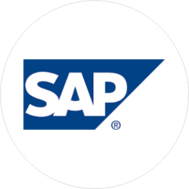
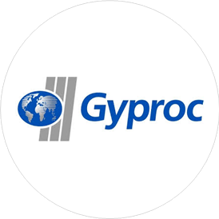
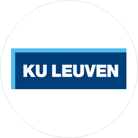

Sapientes
Eigenaar
In 2017 werd ik zelfstandig en richtte ik Sapientes op.
April 2017
Ypto / NMBS
SAP EAM Solution Owner NMBS/SNCB
Als solution owner voor SAP EAM (Plant Maintenance) had ik verschillende verantwoordelijkheden:
bescherming datamodel en PM/CS processen
maximaliseren van de waarde en tevredenheid van de SAP oplossing door de klant
herbruikbaarheid van de concepten en datamodellen verzekeren
“gatekeeper” zijn voor de SAP Solution verbeteringen
Een globale oplossing waarborgen vanuit een functioneel oogpunt
Consistentie van procesdocumentatie, functionele specificaties, testscenario’s en gebruikersdocumentatie garanderen
QA/QC rol voor SAP PM/CS gerelateerde processen
Daarnaast zorgde ik ook voor support van de SAP applicaties (PM, MRS, PS, intern ontwikkelde oplossingen in Abap en Webdynpro), coaching van de junior collega’s en projectgerelateerde activiteiten.
2012 – 2017

SAP
Principal PLM Consultant
Als Principal SAP Product Lifecycle Management consultant specialiseerde ik mij vooral in Plant Maintenance / Enterprise Asset Management, Project Systems / Project & Portfolio Management, Document Management System (DMS) en Cross Application Time Sheet (CATS). Daarnaast gaf ik ook trainingen in standaard SAP over Plant Maintenance en Project Systems.
1999 – 2012

Gyproc
Material Manager, ISO 9000 coordinator, Process engineer en Project leader
Bij BPB Gyproc vervulde ik verschillende rollen. In mijn laatste rol als material manager werd ik key user voor de magazijn- en productiegerelateerde processen voor de implementatie van SAP ERP.
1990 - 1999

KU Leuven
Master in Physical Chemistry
1980 - 1984